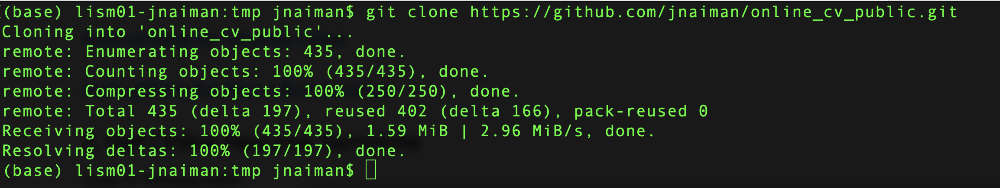
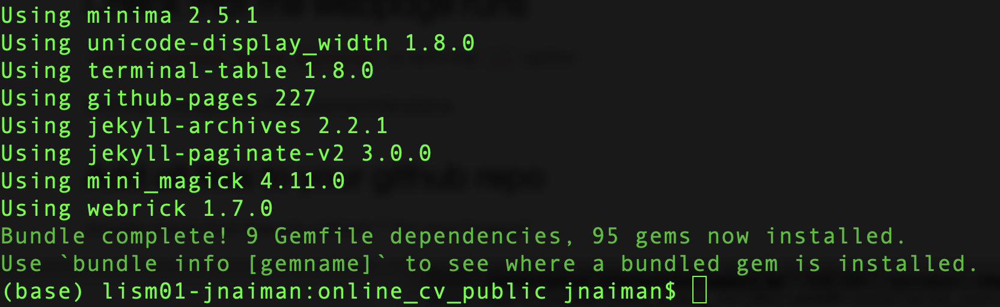
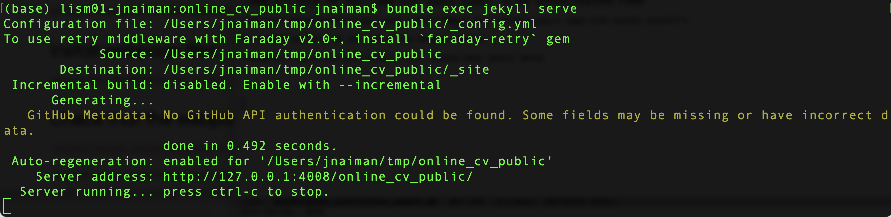

Follow the links for your system below. NOTE: You will likely want to do this outside of your DataViz conda environment.
If you already have Ruby installed (i.e. the “system” Ruby) – make sure you check the installation instructions for your relevant system anyway – it’s possible you will want to install a non-system Ruby version.
If you already have Jekyll installed – make sure it’s the most recent version.
Pay attention if there are “next steps” listed after any of the commands, and make sure you do them.
==> Next steps:
- Run these two commands in your terminal to add Homebrew to your PATH:
echo 'eval "$(/opt/homebrew/bin/brew shellenv)"' >> /Users/jnaiman/.bash_profile
eval "$(/opt/homebrew/bin/brew shellenv)"
You need to run these two lines (echo and eval lines) in order to have the “brew” command in your path.
And after the Mac installation you’ll see the instructions (for the .zshrc shell its a little different):
echo "source $(brew --prefix)/opt/chruby/share/chruby/chruby.sh" >> ~/.bash_profile
echo "source $(brew --prefix)/opt/chruby/share/chruby/auto.sh" >> ~/.bash_profile
echo "chruby ruby-3.1.2" >> ~/.bash_profile # run 'chruby' to see actual version
Make sure you run these as well and re-open a Terminal window so that the relevant packages will be in your path or you can do source ~/.bash_profile (bash)/source ~/.zshrc(zsh).
For Macs you may have to also install bundler: gem install jekyll bundler instead of just Jeykll (gem install jekyll), but first try to run the test webpage without this extra install and see if you get any errors.
See above notes about making sure to run a few things in your Terminal window after your install.
ld: symbol(s) not found for architecture arm64 or something similar.
ruby-install ruby -- --enable-sharedNotes for Windows install:
For Mac, you should have git already installed (but you can install it here just in case).
Step 1: Clone this repository using git clone https://github.com/jnaiman/online_cv_public.git in a Terminal or Anaconda Prompt

You can find this repository URL by navigating to the online template GitHub repositor and copying the URL under the green “Code” button/dropdown.
Step 2: change to this directory with cd online_cv_public in the Terminal/Anaconda Prompt
Step 3: build the Jekyll page with bundle install in the Terminal/Anaconda Prompt

You should see this at the end of the bundle command.
Step 4: Serve the site locally with bundle exec jekyll serve

Step 5: Navigate to the URL listed in a Chrome or Firefox browser – in the above image this is http://127.0.0.1:4008/online_cv_public/. You should see teh following page pop up:

Step 6: Take a screenshot of a side-by-side of your running Terminal/Anaconda Prompt and the served webpage like so:

This screenshot serves as your submission for this portion of the homework assignment.